Step 1: Start with a square piece of origami paper.

Step 2: Fold the paper in half, left over to the right, then unfold.
Step 3: Fold the top corners to the center crease.
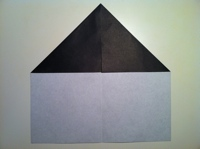Step 4: Turn the paper over.
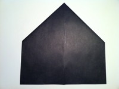Step 5: Fold the slants to meet at the center and allow the flaps in back to come loose.
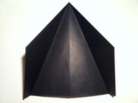Step 6: Fold the "diamond" downwards in half.
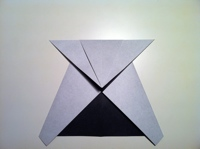Step 7: Fold the lower left and right corners to the middle.
Step 8: Unfold the flaps.

Step 9: Fold the lower part of the figure up beginning at the bottom of the triangle, then unfold.
Step 10: Open the left flap and kind of squash it along the creases as shown.

Step 11: Squash the right flap also.
Step 12: Fold down the left flap, creasing between the left and top corner. Then repeat on the right side.
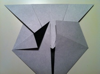Step 13: Tuck the both pointy corners into pockets of the inner triangle.
Step 14: Fold bottom corner up, creasing between the left and right corners.
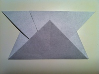Step 15: Fold the left side of the triangle to the bottom, then unfold.

Step 16: Now fold the right side of the triangle to the bottom, then unfold.
Step 17: Using the creases as guides, pinch the top of the triangle to create a protruding triangle flap as shown.

Step 18: Fold the protruding flap to the left.

Step 19: Fold the left corner of the protruding flap to the top, then unfold.

Step 20: Open the protruding flap and squash fold as shown.

Step 21: Fold the left ear to the right, creasing at the point where the ears and cheeks meet.
Step 22: Fold the right corner of the ear to the bottom, then unfold.

Step 23: Now fold the right side of the triangle to the bottom, then unfold.
Step 24: Open the ear and squash down as shown.

Step 25: Repeat steps 22-24 for the right ear.
Step 26: Fold the top of the head back, creasing between the corners of both ears. This will cause the panda ears to magically appear :)
Step 27: Fold the cheeks back and you will have completed the head.
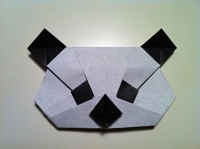Step 1: Start with a square piece of origami paper.

Step 2: Fold upper left corner to the bottom right corner, then unfold.
Step 3: Fold upper right corner to the bottom left corner, then unfold.
Step 4: Fold the top half backwards (at where the diagonal creases meet at an "X"), then unfold.

Step 5: Poke the center of the paper so that it pops in.
Step 6: Bring the left and right creases together to collapse the paper into a triangle.

Step 7: Fold the bottom edge of the triangle to the upper left edge, then unfold.

Step 8: Now fold the bottom to the upper right edge, then unfold.
Step 9: Mountain fold the figure in half, then unfold.
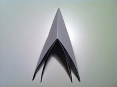Step 10: Open the bottom lip of the upper layer, bending at the center of the triangle, and bring the corners of both sides together as shown.

Step 11: Lay the protruding flap down to the right side.
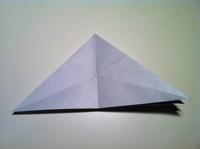Step 12: Open the right flap and fold the bottom to the upper left edge along the crease.

Step 13: Turn the figure over.

Step 14: Open the left flap and fold it on top of the previous flap.

Step 15: Fold the right corner to the left corner.

Step 16: Fold the upper layer creasing between the lower right corner and the corner where the black and white layers meet.
Step 17: Turn the figure over.

Step 18: Repeat step 16 on this side, essentially folding the corner of this layer on top of the previous flap.
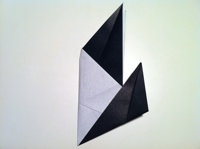Step 19: Rotate the figure as shown.
Step 20: Fold the leg up as shown.
Step 21: Fold a small portion of the leg as shown.
Step 22: Perform the same folds to the other leg.
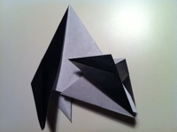Step 23: Unfold the legs halfway to put the panda in a sitting position.

Step 24: Fold the tips of the feet up.
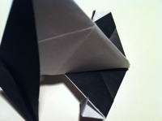Step 25: Attach the Origami Panda head. Now you have a cute sitting panda!